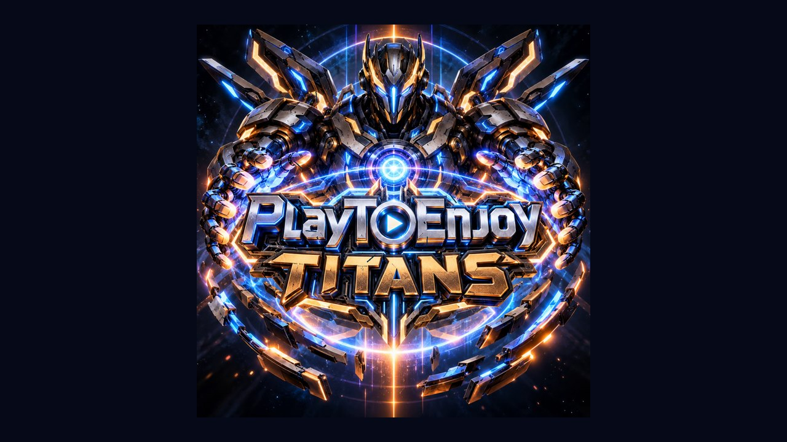

MKX Access
Available now

About the mod
MKX Access is a screen reader mod for Mortal Kombat X on Steam, made by TBlaze. It reads the game aloud through the NVDA screen reader: the menus and their descriptions, every option and its setting, character and variation select, the move lists, and damage and combos in fights. It also reads Test Your Luck, Kombat History, the characters’ biographies in the Kollection and the King of the Hill theater.
In fights you hear sounds you can tune: warnings as a fighter’s health drops, a sound when X-ray is ready, and a hum that grows louder as a fighter nears a wall, each coming from that fighter’s side. In practice mode it reads frame data for every move. It also replaces Steam’s invite window with a spoken friend list, and tells you when a friend invites you so you can accept from the game.
MKX Access is TBlaze’s own mod, which we are proud to share here. Version 1.0 is out now, and TBlaze welcomes feedback.
How it works: three steps
- Get Mortal Kombat X on Steam: Mortal Kombat X on Steam (opens the Steam store). The mod does not include the game, and it only works with the Steam version. New to Steam? Our Steam Big Picture Helper installs Steam for you.
- Install NVDA, the free screen reader, from NV Access. The mod speaks through it.
- Download the mod below and run its Install. It finds the game on its own. Then start NVDA and the game, and you will hear “MKX Access loaded”.
Last updated: 20 November 2026 (version 1.0)
Downloads
MKX Access is made by TBlaze and shared free under the MIT licence; the NVDA part comes from NV Access under the LGPL 2.1. It belongs to TBlaze, not to PlayToEnjoy Titans. The download comes straight from TBlaze’s MKX Access page on GitHub, which always has the newest version.
Mod
Version 1.0, for Windows. You need Mortal Kombat X from Steam and the NVDA screen reader.
- Download for WindowsZip file, about 2 MB.
How to install
Choosing the download link starts the download straight away, and the zip file goes into your Downloads folder.
- Make sure Mortal Kombat X is closed.
- Unzip the folder: right-click it and choose Extract All.
- Open the MKXAccess folder and run Install. It finds the game on its own and tells you when it is done. Windows may ask whether to run a file from the internet: choose Run, or More info then Run anyway.
- Start NVDA, then start the game. About 2 seconds after the game window appears you will hear “MKX Access”, the version number and “loaded”.
To update, download the new zip and run its Install the same way. To remove the mod, run Uninstall from the same folder.
If Install can’t find the game, TBlaze’s GitHub page explains how to copy the files into the game folder by hand.
What you need
- Windows, with Mortal Kombat X from Steam (other versions are not supported: on them the mod stays out of the way).
- The NVDA screen reader.
- A keyboard for the mod’s keys; a controller works for the game and for some of the mod’s features.
- Best used offline: the mod only reads the screen and does not change the game, but keep mods out of ranked online matches.
Controls
These keys work while the game window is in front.
| Action | Keyboard | Controller |
|---|---|---|
| Accessibility menu (sound volumes and readout options) | F3 | Hold Back and press Y |
| Repeat the last thing spoken | F5 | None |
| Read everything on the screen | F6 | None |
| Auto read of new text: off, everywhere, or everywhere except fights | F7 | None |
| Mute or unmute the mod | F8 | None |
| Say the mod’s version | F9 | None |
| Damage numbers on or off | F10 | None |
| Hit and combo readout on or off | Ctrl+F10 | None |
| Frame data in practice on or off | Ctrl+Shift+F10 | None |
| Next or previous Steam friend to invite | F11 or Shift+F11 | D-pad down or up, on the invite screen |
| Send the invite | Ctrl+F11 | A, on the invite screen |
| Accept a friend’s invite | Ctrl+F11 | Back |
Accessibility features
- Menus, descriptions, options and their settings read aloud through NVDA.
- Character and variation select, move lists, and damage and combos in fights.
- Health warnings at 75, 50 and 25 percent, an X-ray ready sound and a wall hum, each from the fighter’s or the wall’s side, with their own volumes.
- Frame data in practice mode: each move’s frame data, and after each attack how fast it was and how far ahead you are on hit or block.
- A spoken Steam friend list for invites, and invites you receive announced.
- Test Your Luck, Kombat History, character biographies and King of the Hill read aloud.
- Every sound can be swapped for your own.
The Krypt is only partly accessible so far: you hear its tips, button prompts and prices, but not yet enough to find your way around it on your own.
Follow TBlaze
Feedback
To report a problem with the mod, open an issue on MKX Access on GitHub. Say where in the game it happened and attach MKXAccess.log from the game’s Retail folder (it is replaced each time the game starts, so grab it before playing again).
Credits
- Made by TBlaze, who also made the fight sounds.
- Thanks to YourSins and RattleHead for testing, feedback and suggestions.
- MKXHook by ermaccer, which works alongside MKX Access.
- The NVDA controller client by NV Access.